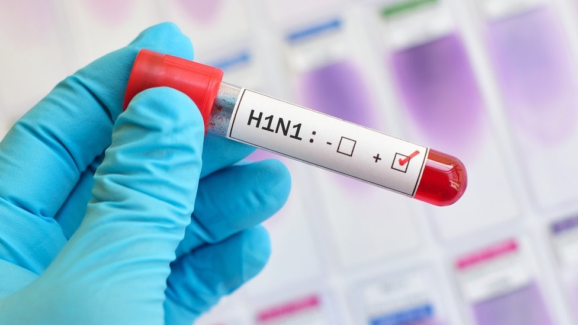
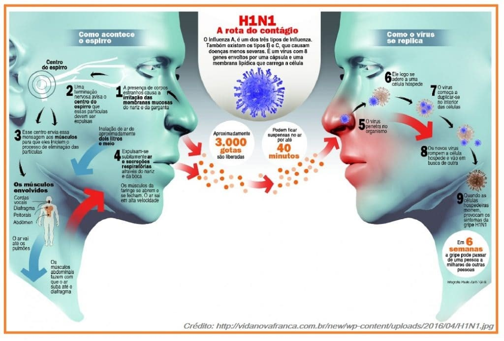
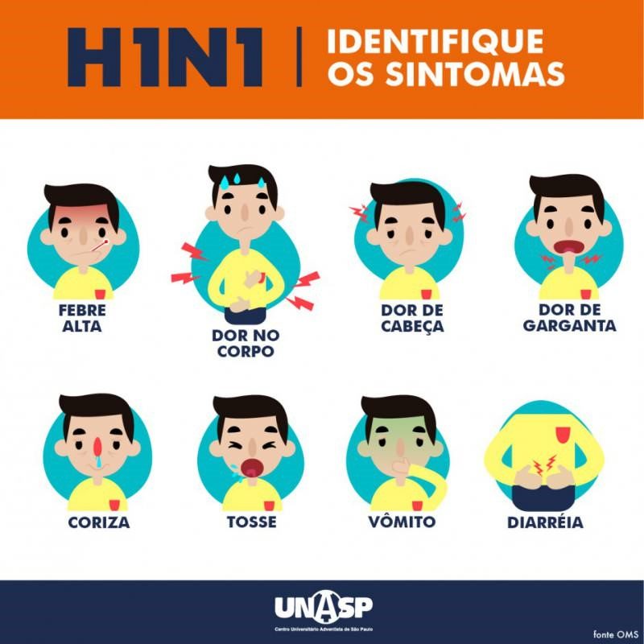

índice
- Introdução
- Gripe espanhola
TRABALHO BIOLOGIA 1º BIMESTRE

Doenças causadas por virús
Introdução
Os vírus se destacam por causar vírus ao ser humano e também por sua alta gama de infecção, podendo se alojar desde uma bactéria até um ser humano. Vale ressaltar que eles só se reproduzem no interior das células.
Além disso, não é possível visualizara-los nem por olho e microscópio óptico, pelo de serem extremamente pequenos. Um fato curioso é que não possuem célula, sendo considerados por muitos um ser não vivo.

Os pesquisadores da área, dizem que são parasitas intracelulares obrigatórios, pois só se reproduzem no interior da célula, como dito anteriormente. Ademais, um dos tópicos mais importantes a dizer, é o fato de não produzirem suas próprias proteínas, o qual não os permite realizar atividades metabólicas fora das células, por isso são considerados parasitas.
A estrutura dos vírus bastante simples, são formados por capsídeo que envolvem o ácido nucleico (DNA ou RNA), mas existe exceções de vírus que possuem ambas (DNA ou RNA). O ácido nucleico conjuntamente ao capsídeo é chamado de nucleocapsídio, contudo há vírus envelopados que possuem uma proteção lipídica extra, providos da membrana da célula hospedeira. Os vírus se destacam por causar vírus ao ser humano e também por sua alta gama de infecção, podendo se alojar desde uma bactéria até um ser humano. Vale ressaltar que eles só se reproduzem no interior das células.
Além disso, não é possível visualizara-los nem por olho e microscópios óptico, pelo de serem extremamente pequenos. Um fato curioso é que não possuem célula, sendo considerados por muitos um ser não vivo.
Os pesquisadores da área, dizem que são parasitas intracelulares obrigatórios, pois só se reproduzem no interior da célula, como dito anteriormente. Ademais, um dos tópicos mais importantes a dizer, é o fato de não produzirem suas próprias proteínas, o qual não os permite realizar atividades metabólicas fora das células, por isso são considerados parasitas.
A estrutura dos vírus bastante simples, são formados por capsídeo que envolvem o ácido nucleico (DNA ou RNA), mas existe exceções de vírus que possuem ambas (DNA ou RNA). O ácido nucleico conjuntamente ao capsídeo é chamado de nucleocapsídio, contudo há vírus envelopados que possuem uma proteção lipídica extra, providos da membrana da célula hospedeira. Prosseguindo, todo o vírus tem sua maneira específica de se multiplicar, ou seja, suas especificadas. Para exemplificar, existe um meio onde o material genético viral pode manter-se ligado ao da célula hospedeira, e a transmissão desse material para novas células ocorre quando ela se divide, concretizando um ciclo lisogênico. Para finalizar, é importante deixar claro que não tem como tratar as viroses com antibiótico, mas sim com as poucas drogas existentes.
Algumas doenças
Gripe Espanhola
Historia:
A gripe espanhola aconteceu entre 1918 e 1919, e foi uma grande pandemia que começou no final da primeira guerra mundial, e levou cerca de 50.000.000 de vidas, ela se originou por uma mutação no vírus H1N1, os primeiros casos foram registrados nos EUA em uma instalação militar no Kansas, onde o soldado Albert Gitchell teve os sintomas da gripe em 11/03/1918, a movimentação e interação das tropas nas trincheiras na primeira guerra ajudou a propagar a doença, muitos países envolvidos não noticiaram sobre a noticia o presidente dos Estados Unidos Woodrow Wilson censurou a imprensa de noticiar sobre a doença.
 E como a Espanha não estava envolvido diretamente no conflito noticiou amplamente sobre a gripe, que por isso se deu o nome de gripe espanhola, a gripe chegou no Brasil por meio de soldados brasileiros enviados para uma missão de estabelecer um acampamento médico brasileiro em paris, onde tiveram contato com o vírus em que cerca de mil e 200 homens nos seis navios, mil adoeceram e 156 morreram. Já em setembro de 1818 um correio britânico chamado “Demerara”, vindo de Lisboa e com escalas em Dakar, Recife e Salvador, chegou ao Rio de Janeiro. Onde trouxe consigo 200 tripulantes infectados. Já o fim da pandemia começou a se dar em meados de 1918, onde no Brasil os infectados começaram a se recuperar e menos pessoas começaram a se infectar.
E como a Espanha não estava envolvido diretamente no conflito noticiou amplamente sobre a gripe, que por isso se deu o nome de gripe espanhola, a gripe chegou no Brasil por meio de soldados brasileiros enviados para uma missão de estabelecer um acampamento médico brasileiro em paris, onde tiveram contato com o vírus em que cerca de mil e 200 homens nos seis navios, mil adoeceram e 156 morreram. Já em setembro de 1818 um correio britânico chamado “Demerara”, vindo de Lisboa e com escalas em Dakar, Recife e Salvador, chegou ao Rio de Janeiro. Onde trouxe consigo 200 tripulantes infectados. Já o fim da pandemia começou a se dar em meados de 1918, onde no Brasil os infectados começaram a se recuperar e menos pessoas começaram a se infectar.
Segundo uma carta escrita entre 1918 e 1919, mas só publicada no British Medical Journal quase 60 anos depois, onde um médico americano diz:
“A doença começa como o tipo comum de gripe, mas os doentes desenvolvem rapidamente o tipo mais viscoso de pneumonia jamais visto. Duas horas após darem entrada no hospital, têm manchas castanho-avermelhadas nas maçãs do rosto e algumas horas mais tarde pode-se começar a ver a cianose estendendo-se por toda a face a partir das orelhas, até que se torna difícil distinguir o homem negro do branco. A morte chega em poucas horas e acontece simplesmente como uma falta de ar, até que morrem sufocados. É horrível. Pode-se ficar olhando um, dois ou 20 homens morrerem, mas ver esses pobres-diabos sendo abatidos como moscas deixa qualquer um exasperado. ”
A doença instalava-se bruscamente, com grande elevação da temperatura, prostração, cefalalgia, catarro nas vias aéreas superiores, tosse, intolerância à luz, dores pelo corpo, olhos injetados e conjuntivas tumefactas e, por vezes, perturbações nervosas e digestivas (Diario da Bahia, 26 set. 1918, p.3; 23 out. 1918, p.2).
Omo naquele tempo não se tinha conhecimento dos antibióticos nem aparelhos respiradores e também não podíamos ver os vírus com os microscópios da época, por isso não existia um tratamento eficaz para essa doença e os médicos receitavam: quinino (medicamento usado para malária) e a população utilizava produtos à base de alfazema, limão, coco, cebola, vinho do Porto, sal de azedas, cachaça e fumo de rolo.
Também recorreram a mascaras isolamento social na época da pandemia, mas para a sociedade da época isso foi um impacto muito grande por isso as pessoas ficaram receosas contra isso o que resultou em uma baixa eficácias, mas esse seria o melhor tratamento para essa doença por ser uma doença muito contagiosa.
Influenza aviaria
Historia e especificações:
A ia (influenza aviaria) é uma doença que causa uma grande preocupação na humanidade, mesmo ela tenda a maioria dos contágios serem entre aves, ela pode passar de animal para pessoa, mas não de pessoa para pessoa, mas o medo dos seres humanos é que o vírus da IA possa se mutar e desenvolver um modo de infectar pessoa para pessoa, que consequentemente geraria uma pandemia tão grande qual a da Covid-19, pois a taxa de mortalidade de animais infectados com essa doença é muita grande chegando a ser “superior a 50%” segundo o site da SBMT(sociedade brasileira de medicina tropical), e como em criações de aves esse vírus se mostra altamente contagioso, sendo assim uma pandemia dessa doença se mostra um perigo alarmante.
O vírus da influenza atinge diretamente o sistema respiratório os pulmões para ser mais especifico, existem três tipos de influenza: A, B, C e D. Os tipos A e B são os responsáveis por epidemias sazonais nos seres humanos, enquanto o C, não. A influenza D foi identificado em 2011 e não é capaz de infectar humanos.
vários sintomas da influenza aviaria, mas os principais são esses citados abaixo:
abaixo:
Tosse;
Diarreia;
Febre;
Dor de cabeça;
Coriza;
Dor de garganta;
Dores musculares;
Gripe aviária tem cura e o tratamento é baseado no uso de analgésicos, antitérmicos e remédios para náuseas. Em alguns casos, o médico pode recomendar o uso de antivirais. Se a gripe aviária atingir um humano, geralmente, atinge de forma grave e o mais importante é procurar atendimento o mais rápido possível.
No caso dos seres humanos é muito difícil de sermos atingidos por essa doença, mas quando isso acontece é um caso muito grave e existe um alto risco para a morte.
GRIPE SUÍNA
A gripe suína é uma doença infecciosa respiratória aguda,  causada pelo vírus Influenza, do tipo A. Esse vírus possui variantes que acometem não somente os suínos, mas as aves (a chamada gripe aviária) e nós, seres humanos, causando o chamado “quadro de gripe”. Os vírus que acometem os animais podem também ser transmitidos para o homem, causando quadro clínico semelhante. Habitualmente, estes quadros são sem gravidade. Da mesma forma, o vírus humano pode infectar animais.
Transmição da doençaAcredita-se que o H1N1, outro para a mesma doença, possa ser transmitido da mesma maneira pela qual se transmite a gripe comum. Os vírus da Influenza se disseminam de pessoa para pessoa, especialmente através das vias aéreas, seja pela tosse ou pelos espirros de pessoas infectadas. Algumas vezes, objetos tocados por essas mesmas pessoas podem infectar pessoas saudáveis, pelo fato de o vírus poder sobreviver alguns dias em superfícies variadas. Assim, se uma pessoa deixar o vírus em algum objeto, este pode infectar outra pessoa, quando a mesma tocá-lo e depois levar a mão à boca ou ao nariz.
Profilaxia da Doença
A prevenção da gripe H1N1 segue o mesmo padrão de prevenção usado em outras gripes.
Evitar contato muito próximo com pessoas doentes;
Lavar sempre bem as mãos com água e sabão e evitar levar a mão para regiões da boca, olhos e nariz;
Sempre que possível, fazer uso do álcool em gel;
Manter hábitos saudáveis, como se alimentar bem e beber água;
Não compartilhar materiais de uso pessoal, como toalhas, escovas de dente, pente e afins;
Caso necessário, usar máscara, principalmente quando estiver doente;
Evitar frequentar locais muito fechados e com muitas pessoas; 7
A vacinação é uma estratégia de prevenção da gripe H1N1. Ela é capaz de promover imunidade durante o período de maior circulação do vírus Influenza, reduzindo os riscos das formas graves da doença. No geral, a detecção de anticorpos protetores se dá entre duas a três semanas após a vacinação e, em média, confere proteção de seis a doze meses, sendo que o pico máximo de anticorpos se dá após quatro a seis semanas da vacinação
Dentre os sintomas da gripe H1N1, se destacam:

Febre;
Tosse;
Coriza;
Dores na garganta, musculares e de cabeça;
Mal-estar;
Irritação nos olhos;
Falta de apetite e de ar;
Calafrios;
Cansaço e fadiga;
Vômitos, náuseas e diarreia.
Os sintomas da H1N1 podem permanecer por dias.
O H1N1 tem cura e seu tratamento pode ser feito com o uso de medicamentos que tratam e aliviam os sintomas da doença, como o medicamento Tamiflu, que é usado para tratar qualquer cepa do vírus Influenza. Como em toda gripe, os tratamentos são sintomáticos, com antitérmicos, analgésicos, expectorantes, que controlam os sintomas da doença, como febre e dores.
Os antivirais só devem ser utilizados sob prescrição médica, para caso específicos. Além disso, o paciente com H1N1 deve permanecer em repouso, ingerir muito líquido e ficar em isolamento, evitando transmitir a doença para outros indivíduos.
Somente um médico pode dizer qual é o medicamento mais indicado para cada caso, bem como a dosagem correta e da duração do tratamento. Siga sempre à risca as orientações do médico e nunca se automedique.